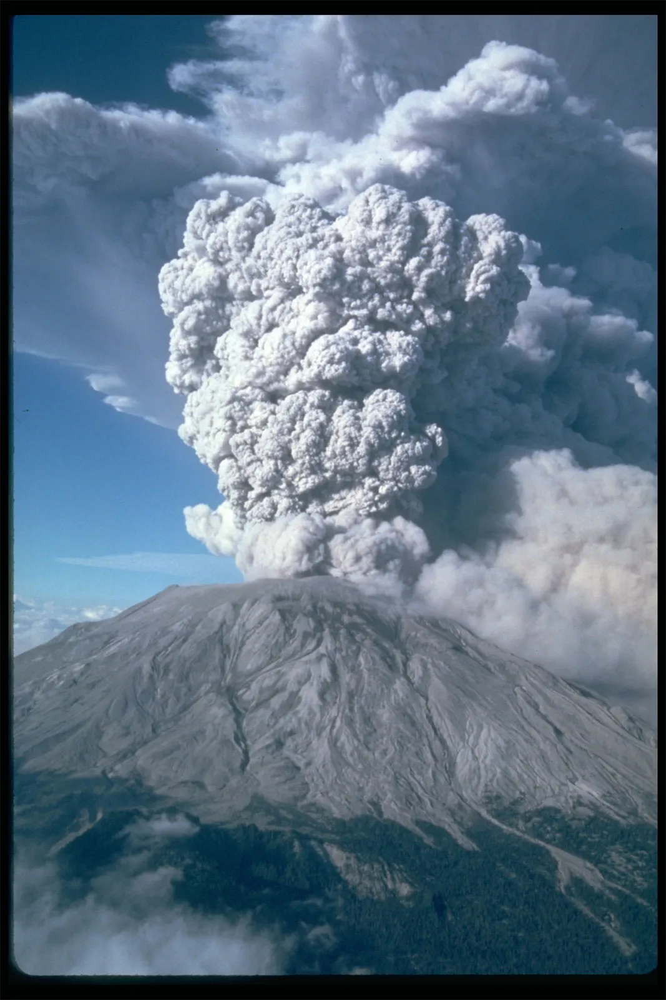

Current Eruptions

Active Volcano
Watch levels: Yellow, Orange, Red
Favorite Volcano
Favorite has not yet been selected! Please Select favorite on Historic Eruptions page!

Watch levels: Yellow, Orange, Red
Favorite has not yet been selected! Please Select favorite on Historic Eruptions page!